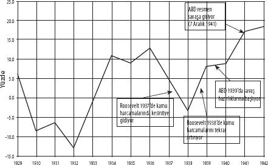

1930'LAR BÜYÜK BUHRAN'INDAN ALINAN DERSLER
Günümüz krizi derinleşirken, dünyanın dört bir yanında hükümetler çukura düşen banka ve şirketleri kurtarmaya koşuştular. Bu süreçte çoğu kez, dudak uçuklatacak kadar büyük miktarlarda yeni para yarattılar. Etkisini gerileme dönemlerinde gösteren işsizlik ödeneği ve refah harcamaları gibi "otomatik dengeleyiciler", tüm gelişmiş ülkelerde mevcut. Ancak, bu dengeleme etkisi resesyonlar için gerçek olsa da, buhranlar için değil. Hükümetler, işçilere doğrudan destek olacak yeni harcama biçimleri oluşturma konusunda, bankalar ve şirketleri kurtarmakta olduğu kadar hevesli değil. Hatta bütçe açığı yaratan harcamalar konusunda, birbirinden derin bir uçurumla ayrılan iki farklı siyasi kamptan söz edebiliriz.
2010 Haziran'ında Toronto'da düzenlenen G-20 toplantılarında bu uçurumlar açıkça gün yüzüne çıktı. Taraflardan biri konumundaki Ortodoks iktisadın talep ettiği "kemer sıkma" politikaları, sağlık, eğitim ve refah harcamaları ile emekçilere destek olan diğer harcamalarda yapılacak kesintiler olarak düşünülmeli. Avrupa Merkez Bankası başkanı Jean-Claude Trichet, bu toplantılar sırasında, "Kemer sıkma uygulamalarının stagnasyonu tetikleyebileceği fikri yanlıştır," cümlesini kurdu. Almanya Maliye Bakanı Wolfgang Schauble ekledi: "Hükümetler, talebi canlandırma doğrultusunda bir kestirme yol olarak borç verme konusunda fazla meraklı davranmamalılar.... Bütçe açığına dayalı harcamalar, sürekli bir durum haline getirilemez." Ortodoks ekonomi anlayışında piyasanın kendi içinde hemen hemen mükemmel bir yapı olduğu ve hızla toparlanacağı yönünde bir inanışın bulunması, bu duruşun nedenlerinden biri. Zaten finans dışı şirketlerin girişim kârı oranları, Şekil 6'da görüldüğü gibi, 2010'da belirgin bir biçimde tekrar yükselişe geçmişti. Ayrıca, bazı yatırım bankaları için, para Meksika Körfezi'ne saçılmış petrolden farksız: Tek yapmaları gereken, yüzeydeki kaymağı sıyırıp almak. 2010 ilk çeyreği Goldman Sachs'a 3,3 milyar $ kazanç getirerek önceki yılı ikiye katladı ve şirket için 1999'da halka açıldığı günden beri en kârlı ikinci çeyrek oldu. Ortodoks kuramın iyimser bakışıyla, mutlu günlerin neredeyse geri döndüğünün işaretiydi bu. Bunun yanında, Avrupa merkez bankaları da 1920'ler Almanya'sında bütçe açığıyla finanse edilen hiper-enflasyona ve bunun yıkıcı toplumsal, siyasi sonuçlarına dair acı hatıraları unutmuş değil. Son olarak, Avrupa sermayesinin kemer sıkma programlarından elde edeceği olası fayda da pratik bir mesele olarak orta yerde duruyor. Avrupa emekçileri, neoliberal çağı Amerikalı ve İngiliz emekçilerine kıyasla daha hasarsız atlattılar. Reagan ve Thatcher tarafından açıkça gösterildiği üzere, krizler emeğe yöneltilecek saldırılar için mükemmel bir kılıf sunar. Bu bakış açısıyla, kemer sıkma uygulamalarının tüm halk için işleri daha da kötüye götürmesi olasılığı, şayet bugüne dek direnmiş emeğin zayıflatılmasına yarayacaksa, kabullenilebilecek bir risktir.
G-20 toplantılarında Amerikan tarafı farklı kaygılar dile getirdi. Sadece ABD'de hane halkı refahı daha şimdiden trilyonlarca dolar düşmüştü ve yeni konut satışları şimdi 1981 düzeyinin bile altındaydı. Üstelik Uluslararası Çalışma Örgütü, "uzun ve ciddi" bir küresel istihdam krizinin kapıya dayandığı uyarısını daha o günlerde yapıyordu. Çeşitli savaşlara bulaşmış ve küresel jandarmalığa soyunmuş bir emperyal güç için, büyük ciddiyetle ele alınması gereken bir uyarıydı bu. Son olarak, yine burada da kritik bir tarihsel ders söz konusu. Başkan Barack Obama, AB liderlerine duruşlarını gözden geçirme çağrısı yaparken, "Geçmişte teşviklerin çok erken geri çekilmesiyle ekonomik güçlüklerin ve resesyonun tekrar baş göstermesine yol açan dolaylı hatalardan ders almaları" gerektiğini söyleyecekti.[17] Sözünü ettiği "dolaylı hatalar" 1930'larda yaşananlarla ilgiliydi. 1929'da borsalarda meydana gelen çöküş, 1929-32 döneminde üretimde sert bir düşüşe ve işsizlikte de aynı ölçüde keskin bir tırmanışa neden oldu. Ancak, takip eden dört yılda üretim neredeyse yüzde 50 artmış, işsizlik üçte bir oranında gerilemiş ve kamu harcamaları yaklaşık yüzde 40 yükselmişti. 1936'da üretimin büyüme hızı yüzde 13 gibi müthiş bir orana erişmiş durumdaydı. Sorun şuydu ki, federal bütçe bu dört yılda neredeyse yüzde 5 açık verilerek uygulandı. Nihayet 1937'de Roosevelt yönetimi vergileri yükseltme ve kamu harcamalarını ciddi ölçüde kesme kararını aldığında,[18] reel GSYH derhal düşecek ve işsizlik bir kez daha yükselecekti. Hatasını fark eden hükümetse hızla geri döndü ve kamu harcamaları ile kamu açıklarını 1938'de önemli miktarda artırdı. 1939'da üretimin büyüme hızı tekrar yüzde 8'i bulmuştu. Amerika ancak o andan sonra olası bir savaşın hazırlıklarına girişebildi ve nihayet 1942'de savaşa bütünüyle girebildi. Şekil 9, bu kritik dönemde gözlenen GSYH büyüme oranlarını gösteriyor.
Bu yaşananlardan çıkartılabilecek pek çok ders var. Birincisi, kriz döneminde kamu harcamalarında kesintiye gidilmesi "dolaylı bir hata" olacaktır. Obama'nın bakış açısı bu yönde. İkincisi, ekonominin 1933'te toparlanmaya başladığı, hükümetin 1938'de harcamaları keserek attığı yanlış adım haricinde, 1939'da savaş harcamalarına başlanmasına, sonrasında 1942'de tamamen savaşa girilmesine dek (Pearl Harbor baskını 7 Aralık 1941'de gerçekleşti) bu toparlanma eğilimini devam ettirdiği son derece açıktır. Dolayısıyla, savaşın kendisi de üretimi ve istihdamı teşvik etmiş olmakla birlikte, gerçekte dokuz yıl önce başlamış olan toparlanmayı savaşa bağlamak yanlış olacaktır. Üçüncüsü, barış döneminde kamu harcamalarının toparlanmada kritik rol oynadığını söylemek gerekir. Dördüncü olarak, kamu harcamaları sadece mal ve hizmet alımıyla sınırlı kalmamış, aynı zamanda kamu hizmetleri yoluyla doğrudan istihdama da yönelmiştir. İş Projeleri İdaresinin (WPA) bile kamu inşaatlarında, sanat alanında, eğitimde ve yoksulların desteklenmesinde tek başına milyonlarca kişiyi istihdam ettiğini belirterek örnek verebiliriz.
Şekil 9: Büyük Buhran Sırasında Reel GSYH Artışı, 1929-1942
